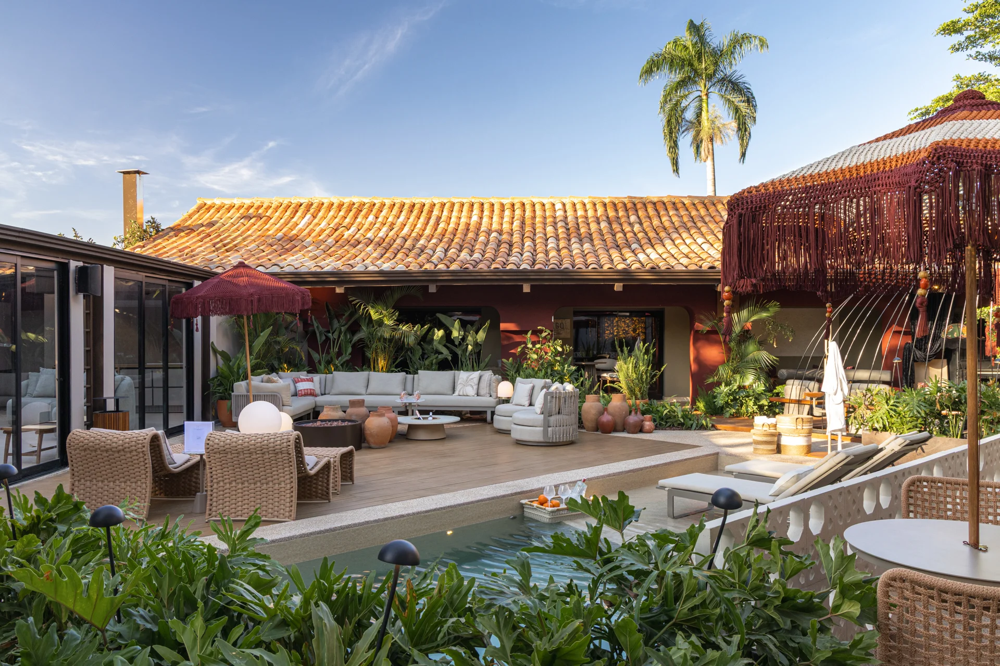

Interiores comerciais que acolhem e deixam os produtos em primeiro plano.
Ver publicaçãoArquitetura, interiores & ambientação
Espaços para viver.
Histórias para ficar.
Um olhar atento ao que faz sentido para você. Do primeiro desejo aos detalhes que dão vida ao espaço.
Conversar sobre meu projeto
Em destaque · CASACOR 2026
Um convite
à permanência.
No Deck Oásis, a água encontra a madeira, a luz atravessa a vegetação e os encontros ganham lugar. Um ambiente pensado para desacelerar e aproveitar a companhia.
Fotos: Victor / Divulgação CASACOR Ribeirão Preto
Projetos selecionados
Outras escalas.
O mesmo cuidado.
O espaço de morar, de trabalhar, de receber. Cada projeto começa com uma maneira própria de viver.
Tons suaves e soluções integradas para uma rotina com mais conforto.
Ver publicaçãoUm espaço de cuidado, com luz acolhedora e atenção aos detalhes.
Ver publicaçãoO olhar sobre o espaço
Bonito é quando
faz sentido.
Estética e função caminham juntas. A luz, os materiais e a disposição de cada elemento fazem parte de uma mesma intenção: criar ambientes que se conectam com a vida.
A relação entre os espaços, a luz natural e as pessoas. Arquitetura pensada a partir das formas de habitar e conviver.
Marcenaria, materiais e iluminação em harmonia. Ambientes residenciais e comerciais em que cada escolha tem uma função.
Mobiliário, texturas e objetos que completam o espaço. Camadas de aconchego para dar presença e personalidade aos ambientes.

Por trás de cada escolha
Prazer,
Luciane.
Arquiteta em Ribeirão Preto, Luciane Folheto atua com arquitetura, interiores e ambientação. Seu trabalho aproxima o cuidado com a estética das necessidades de quem usa cada espaço.
A presença da natureza, o conforto e a vontade de reunir estão no Deck Oásis, ambiente que assina com João Vitor Gulini na CASACOR Ribeirão Preto 2026.
Conheça mais do meu olharVamos começar uma conversa
Que história você
quer viver aqui?
Conte sobre o seu espaço, suas ideias e o que você imagina para ele.
Falar com Luciane no WhatsApp +55 (16) 99731-8584